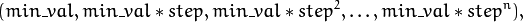
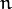
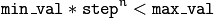
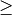
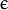
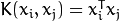
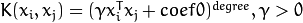
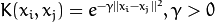
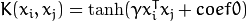
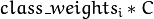

Support Vector Machines¶
Originally, support vector machines (SVM) was a technique for building an optimal binary (2-class) classifier. Later the technique was extended to regression and clustering problems. SVM is a partial case of kernel-based methods. It maps feature vectors into a higher-dimensional space using a kernel function and builds an optimal linear discriminating function in this space or an optimal hyper-plane that fits into the training data. In case of SVM, the kernel is not defined explicitly. Instead, a distance between any 2 points in the hyper-space needs to be defined.
The solution is optimal, which means that the margin between the separating hyper-plane and the nearest feature vectors from both classes (in case of 2-class classifier) is maximal. The feature vectors that are the closest to the hyper-plane are called support vectors, which means that the position of other vectors does not affect the hyper-plane (the decision function).
SVM implementation in OpenCV is based on [LibSVM].
| [Burges98] |
|
| [LibSVM] | (1, 2) C.-C. Chang and C.-J. Lin. LIBSVM: a library for support vector machines, ACM Transactions on Intelligent Systems and Technology, 2:27:1–27:27, 2011. (http://www.csie.ntu.edu.tw/~cjlin/papers/libsvm.pdf) |
CvParamGrid¶
- struct CvParamGrid¶
The structure represents the logarithmic grid range of statmodel parameters. It is used for optimizing statmodel accuracy by varying model parameters, the accuracy estimate being computed by cross-validation.
- double CvParamGrid::min_val¶
Minimum value of the statmodel parameter.
- double CvParamGrid::max_val¶
Maximum value of the statmodel parameter.
- double CvParamGrid::step¶
Logarithmic step for iterating the statmodel parameter.
The grid determines the following iteration sequence of the statmodel parameter values:

where  is the maximal index satisfying

The grid is logarithmic, so step must always be greater then 1.
CvParamGrid::CvParamGrid¶
The constructors.
- C++: CvParamGrid::CvParamGrid()¶
- C++: CvParamGrid::CvParamGrid(double min_val, double max_val, double log_step)¶
The full constructor initializes corresponding members. The default constructor creates a dummy grid:
CvParamGrid::CvParamGrid()
{
min_val = max_val = step = 0;
}
CvParamGrid::check¶
Checks validness of the grid.
- C++: bool CvParamGrid::check()¶
Returns true if the grid is valid and false otherwise. The grid is valid if and only if:
- Lower bound of the grid is less then the upper one.
- Lower bound of the grid is positive.
- Grid step is greater then 1.
CvSVMParams¶
- struct CvSVMParams¶
SVM training parameters.
The structure must be initialized and passed to the training method of CvSVM.
CvSVMParams::CvSVMParams¶
The constructors.
- C++: CvSVMParams::CvSVMParams()¶
- C++: CvSVMParams::CvSVMParams(int svm_type, int kernel_type, double degree, double gamma, double coef0, double Cvalue, double nu, double p, CvMat* class_weights, CvTermCriteria term_crit)¶
Parameters: - svm_type –
Type of a SVM formulation. Possible values are:
- CvSVM::C_SVC C-Support Vector Classification. n-class classification (n  2), allows imperfect separation of classes with penalty multiplier C for outliers.
- CvSVM::NU_SVC
 -Support Vector Classification. n-class classification with possible imperfect separation. Parameter (in the range 0..1, the larger the value, the smoother the decision boundary) is used instead of C.
-Support Vector Classification. n-class classification with possible imperfect separation. Parameter (in the range 0..1, the larger the value, the smoother the decision boundary) is used instead of C. - CvSVM::ONE_CLASS Distribution Estimation (One-class SVM). All the training data are from the same class, SVM builds a boundary that separates the class from the rest of the feature space.
- CvSVM::EPS_SVR -Support Vector Regression. The distance between feature vectors from the training set and the fitting hyper-plane must be less than p. For outliers the penalty multiplier C is used.
- CvSVM::NU_SVR -Support Vector Regression. is used instead of p.
See [LibSVM] for details.
- kernel_type –
Type of a SVM kernel. Possible values are:
- CvSVM::LINEAR Linear kernel. No mapping is done, linear discrimination (or regression) is done in the original feature space. It is the fastest option. .
- CvSVM::POLY Polynomial kernel: .
- CvSVM::RBF Radial basis function (RBF), a good choice in most cases. .
- CvSVM::SIGMOID Sigmoid kernel: .
- degree – Parameter degree of a kernel function (POLY).
- gamma – Parameter
 of a kernel function (POLY / RBF / SIGMOID).
of a kernel function (POLY / RBF / SIGMOID). - coef0 – Parameter coef0 of a kernel function (POLY / SIGMOID).
- Cvalue – Parameter C of a SVM optimization problem (C_SVC / EPS_SVR / NU_SVR).
- nu – Parameter of a SVM optimization problem (NU_SVC / ONE_CLASS / NU_SVR).
- p – Parameter of a SVM optimization problem (EPS_SVR).
- class_weights – Optional weights in the C_SVC problem , assigned to particular classes. They are multiplied by C so the parameter C of class #i becomes . Thus these weights affect the misclassification penalty for different classes. The larger weight, the larger penalty on misclassification of data from the corresponding class.
- term_crit – Termination criteria of the iterative SVM training procedure which solves a partial case of constrained quadratic optimization problem. You can specify tolerance and/or the maximum number of iterations.
- svm_type –
The default constructor initialize the structure with following values:
CvSVMParams::CvSVMParams() :
svm_type(CvSVM::C_SVC), kernel_type(CvSVM::RBF), degree(0),
gamma(1), coef0(0), C(1), nu(0), p(0), class_weights(0)
{
term_crit = cvTermCriteria( CV_TERMCRIT_ITER+CV_TERMCRIT_EPS, 1000, FLT_EPSILON );
}
CvSVM¶
- class CvSVM : public CvStatModel¶
Support Vector Machines.
Note
- (Python) An example of digit recognition using SVM can be found at opencv_source/samples/python2/digits.py
- (Python) An example of grid search digit recognition using SVM can be found at opencv_source/samples/python2/digits_adjust.py
- (Python) An example of video digit recognition using SVM can be found at opencv_source/samples/python2/digits_video.py
CvSVM::CvSVM¶
Default and training constructors.
- C++: CvSVM::CvSVM()¶
- C++: CvSVM::CvSVM(const Mat& trainData, const Mat& responses, const Mat& varIdx=Mat(), const Mat& sampleIdx=Mat(), CvSVMParams params=CvSVMParams() )¶
- C++: CvSVM::CvSVM(const CvMat* trainData, const CvMat* responses, const CvMat* varIdx=0, const CvMat* sampleIdx=0, CvSVMParams params=CvSVMParams() )¶
- Python: cv2.SVM([trainData, responses[, varIdx[, sampleIdx[, params]]]]) → <SVM object>¶
The constructors follow conventions of CvStatModel::CvStatModel(). See CvStatModel::train() for parameters descriptions.
CvSVM::train¶
Trains an SVM.
- C++: bool CvSVM::train(const Mat& trainData, const Mat& responses, const Mat& varIdx=Mat(), const Mat& sampleIdx=Mat(), CvSVMParams params=CvSVMParams() )¶
- C++: bool CvSVM::train(const CvMat* trainData, const CvMat* responses, const CvMat* varIdx=0, const CvMat* sampleIdx=0, CvSVMParams params=CvSVMParams() )¶
- Python: cv2.SVM.train(trainData, responses[, varIdx[, sampleIdx[, params]]]) → retval¶
The method trains the SVM model. It follows the conventions of the generic CvStatModel::train() approach with the following limitations:
- Only the CV_ROW_SAMPLE data layout is supported.
- Input variables are all ordered.
- Output variables can be either categorical (params.svm_type=CvSVM::C_SVC or params.svm_type=CvSVM::NU_SVC), or ordered (params.svm_type=CvSVM::EPS_SVR or params.svm_type=CvSVM::NU_SVR), or not required at all (params.svm_type=CvSVM::ONE_CLASS).
- Missing measurements are not supported.
All the other parameters are gathered in the CvSVMParams structure.
CvSVM::train_auto¶
Trains an SVM with optimal parameters.
- C++: bool CvSVM::train_auto(const Mat& trainData, const Mat& responses, const Mat& varIdx, const Mat& sampleIdx, CvSVMParams params, int k_fold=10, CvParamGrid Cgrid=CvSVM::get_default_grid(CvSVM::C), CvParamGrid gammaGrid=CvSVM::get_default_grid(CvSVM::GAMMA), CvParamGrid pGrid=CvSVM::get_default_grid(CvSVM::P), CvParamGrid nuGrid=CvSVM::get_default_grid(CvSVM::NU), CvParamGrid coeffGrid=CvSVM::get_default_grid(CvSVM::COEF), CvParamGrid degreeGrid=CvSVM::get_default_grid(CvSVM::DEGREE), bool balanced=false)¶
- C++: bool CvSVM::train_auto(const CvMat* trainData, const CvMat* responses, const CvMat* varIdx, const CvMat* sampleIdx, CvSVMParams params, int kfold=10, CvParamGrid Cgrid=get_default_grid(CvSVM::C), CvParamGrid gammaGrid=get_default_grid(CvSVM::GAMMA), CvParamGrid pGrid=get_default_grid(CvSVM::P), CvParamGrid nuGrid=get_default_grid(CvSVM::NU), CvParamGrid coeffGrid=get_default_grid(CvSVM::COEF), CvParamGrid degreeGrid=get_default_grid(CvSVM::DEGREE), bool balanced=false )¶
- Python: cv2.SVM.train_auto(trainData, responses, varIdx, sampleIdx, params[, k_fold[, Cgrid[, gammaGrid[, pGrid[, nuGrid[, coeffGrid[, degreeGrid[, balanced]]]]]]]]) → retval¶
Parameters: - k_fold – Cross-validation parameter. The training set is divided into k_fold subsets. One subset is used to test the model, the others form the train set. So, the SVM algorithm is executed k_fold times.
- *Grid – Iteration grid for the corresponding SVM parameter.
- balanced – If true and the problem is 2-class classification then the method creates more balanced cross-validation subsets that is proportions between classes in subsets are close to such proportion in the whole train dataset.
The method trains the SVM model automatically by choosing the optimal parameters C, gamma, p, nu, coef0, degree from CvSVMParams. Parameters are considered optimal when the cross-validation estimate of the test set error is minimal.
If there is no need to optimize a parameter, the corresponding grid step should be set to any value less than or equal to 1. For example, to avoid optimization in gamma, set gamma_grid.step = 0, gamma_grid.min_val, gamma_grid.max_val as arbitrary numbers. In this case, the value params.gamma is taken for gamma.
And, finally, if the optimization in a parameter is required but the corresponding grid is unknown, you may call the function CvSVM::get_default_grid(). To generate a grid, for example, for gamma, call CvSVM::get_default_grid(CvSVM::GAMMA).
This function works for the classification (params.svm_type=CvSVM::C_SVC or params.svm_type=CvSVM::NU_SVC) as well as for the regression (params.svm_type=CvSVM::EPS_SVR or params.svm_type=CvSVM::NU_SVR). If params.svm_type=CvSVM::ONE_CLASS, no optimization is made and the usual SVM with parameters specified in params is executed.
CvSVM::predict¶
Predicts the response for input sample(s).
- C++: float CvSVM::predict(const Mat& sample, bool returnDFVal=false ) const¶
- C++: float CvSVM::predict(const CvMat* sample, bool returnDFVal=false ) const¶
- C++: float CvSVM::predict(const CvMat* samples, CvMat* results) const¶
- Python: cv2.SVM.predict(sample[, returnDFVal]) → retval¶
- Python: cv2.SVM.predict_all(samples[, results]) → results¶
Parameters: - sample – Input sample for prediction.
- samples – Input samples for prediction.
- returnDFVal – Specifies a type of the return value. If true and the problem is 2-class classification then the method returns the decision function value that is signed distance to the margin, else the function returns a class label (classification) or estimated function value (regression).
- results – Output prediction responses for corresponding samples.
If you pass one sample then prediction result is returned. If you want to get responses for several samples then you should pass the results matrix where prediction results will be stored.
The function is parallelized with the TBB library.
CvSVM::get_default_grid¶
Generates a grid for SVM parameters.
- C++: CvParamGrid CvSVM::get_default_grid(int param_id)¶
Parameters: - param_id –
SVM parameters IDs that must be one of the following:
- CvSVM::C
- CvSVM::GAMMA
- CvSVM::P
- CvSVM::NU
- CvSVM::COEF
- CvSVM::DEGREE
The grid is generated for the parameter with this ID.
- param_id –
The function generates a grid for the specified parameter of the SVM algorithm. The grid may be passed to the function CvSVM::train_auto().
CvSVM::get_params¶
Returns the current SVM parameters.
- C++: CvSVMParams CvSVM::get_params() const¶
This function may be used to get the optimal parameters obtained while automatically training CvSVM::train_auto().
CvSVM::get_support_vector¶
Retrieves a number of support vectors and the particular vector.
- C++: int CvSVM::get_support_vector_count() const¶
- C++: const float* CvSVM::get_support_vector(int i) const¶
- Python: cv2.SVM.get_support_vector_count() → retval¶
Parameters: i – Index of the particular support vector.
The methods can be used to retrieve a set of support vectors.
Help and Feedback
You did not find what you were looking for?- Ask a question on the Q&A forum.
- If you think something is missing or wrong in the documentation, please file a bug report.